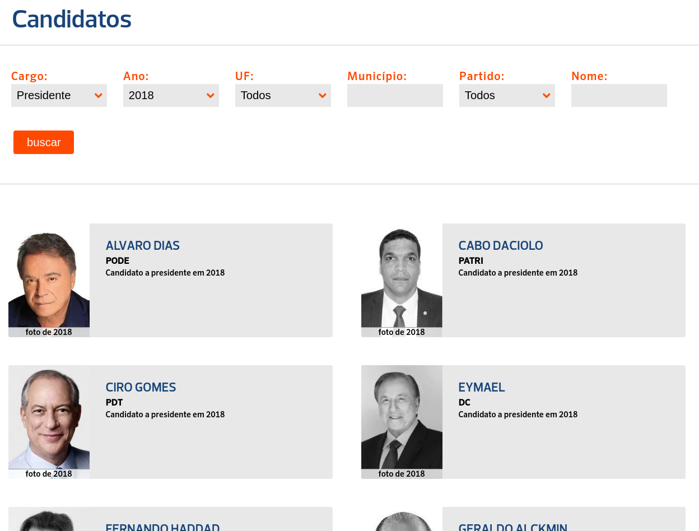
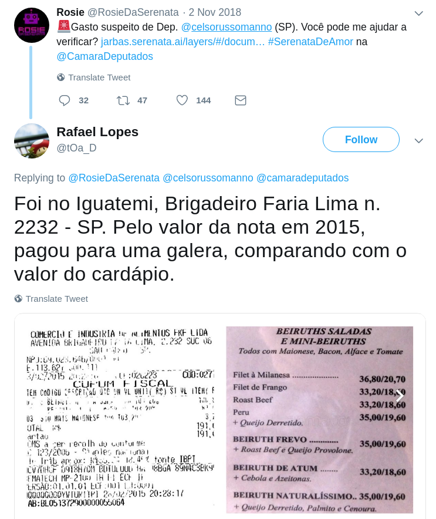
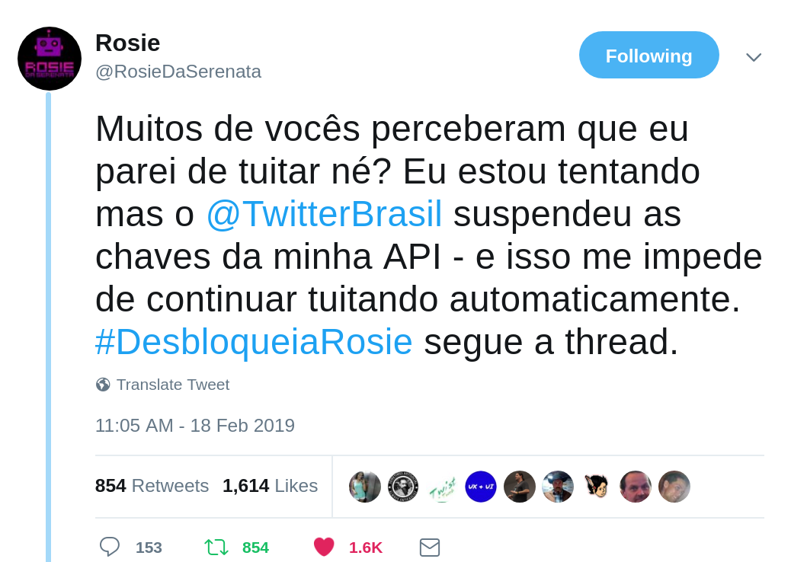
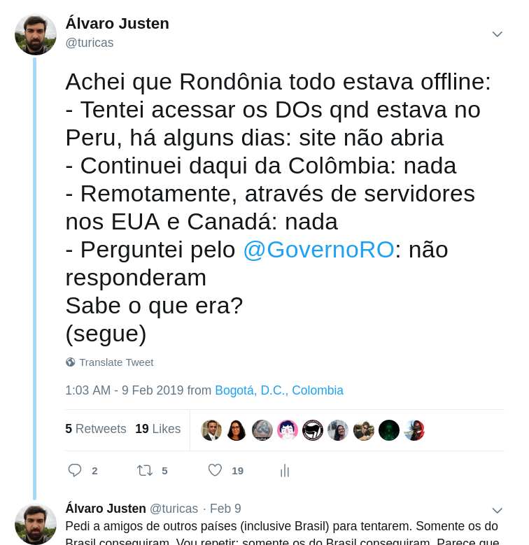
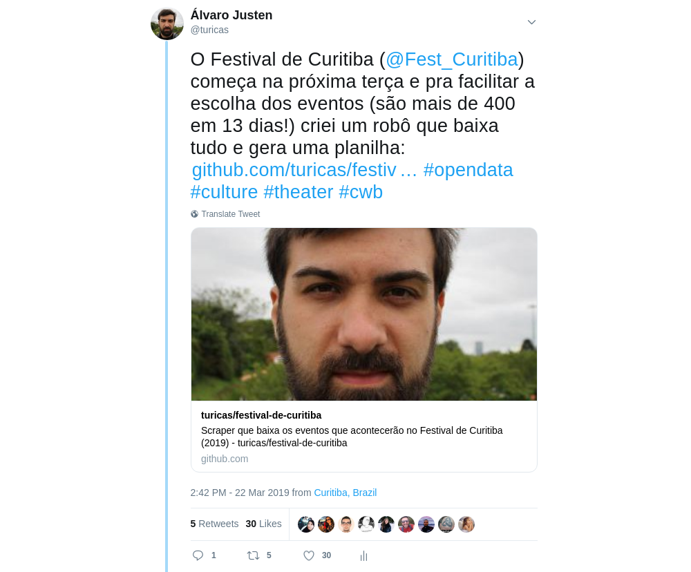
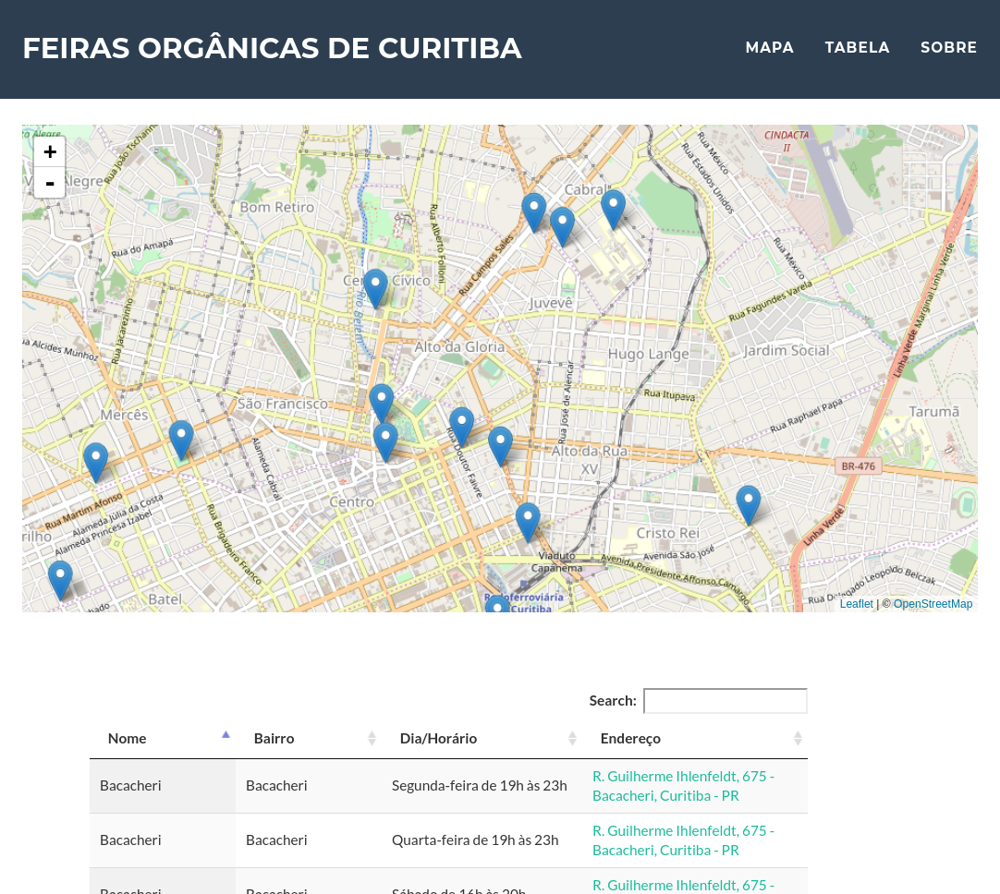

Dados Abertos, Direito Autoral e Democracia
Álvaro Justen
CCONS - UFPR
25 de março de 2019 - Curitiba/PR

$ whoami
Turicas, prazer! =)
Sigam-me os bons:
{twitter,
github,
youtube,
slideshare,
instagram}
/turicas
turicas@brasil.io
Brasil.IO
O Brasil em dados libertos
Trabalhos feitos com Dados Públicos
generonumero.media
(em conjunto com Natália Mazotte)

Veja a Edição "Mulheres na Política"

Veja a Edição "Mulheres na Política II"

Veja a Edição "Espaço Público"
Rua: substantivo (ainda) masculino

youtu.be/7yQ8U2tFFq4

apublica.org
(em conjunto com Adriano Belisário)

Acesse a matéria

correio24horas.com.br
(em conjunto com Juan Torres)

Acesse a matéria

theintercept.com/brasil
(em conjunto com Adriano Belisário)

Acesse a matéria

Acesse a matéria

Acesse a matéria

Acesse a matéria
Aplicações Úteis
eleicoes.poder360.com.br
Inovação Cívica
Operação Serenata de Amor

serenata.ai
“ [A CGU] acredita que a transparência é o melhor antídoto contra corrupção, dado que ela é mais um mecanismo indutor de que os gestores públicos ajam com responsabilidade.-- CGU.gov.br
Uma gestão pública transparente permite à sociedade, com informações, colaborar no controle das ações de seus governantes, com intuito de checar se os recursos públicos estão sendo usados como deveriam. ”
Controle Social
“ De acordo com o governo brasileiro, o controle social é a participação da sociedade civil nos processos de planejamento, acompanhamento, monitoramento e avaliação das ações da gestão pública e na execução das políticas e programas públicos. ”-- Wikipedia
Rosie, a robô
R$ 155 em um restaurante que custa R$ 70/kg, deputado?
twitter.com/RosieDaSerenata/status/859137918719467521
Rosie, a robô (2)
R$ 191 em um restaurante cujos pratos não custam R$ 40, deputado?
twitter.com/tOa_D/status/1058495655184871425
Bloqueio da Rosie
O Twitter poderia ter feito isso?
twitter.com/RosieDaSerenata/status/1097497396890734597
Dados Abertos
“ Dados abertos são dados que podem ser livremente usados, reutilizados e redistribuídos por qualquer pessoa - sujeitos, no máximo, à exigência de atribuição da fonte e compartilhamento pelas mesmas regras. ”-- OpenData Handbook (definição de Open Definition)
Mais detalhes:
“ Copyright laws are turning kids into criminals. Totally failed war. ”-- Lawrence Lessig
creativecommons.org
Dados?
Automação
Data Pipeline

schoolofdata.org/methodology
Nem sempre o dado está disponível
twitter.com/turicas/status/1094069287206248450
Nem sempre o dado é aberto

twitter.com/turicas/status/1091767340134514690
Nem sempre o dado é grátis (???)

twitter.com/turicas/status/1019272233095745537
Maior parte do tempo dos projetos de análise de dados:

“ Democracia é um regime político em que todos os cidadãos elegíveis participam igualmente — diretamente ou através de representantes eleitos — na proposta, no desenvolvimento e na criação de leis, [...]-- Wikipedia
Ela abrange as condições sociais, econômicas e culturais que permitem o exercício livre e igual da autodeterminação política. ”
Libertando Dados
Libertação de Dados: Exemplo (1)
Dados do Conselho Nacional de Justiça (centenas de planilhas)

twitter.com/turicas/status/943176715672711168
Libertação de Dados: Exemplo (2)
Dados da Receita Federal (formato proprietário)

twitter.com/turicas/status/959120200976224262
Libertação de Dados: Exemplo (3)
Dados do PROUNI (site sai do ar)

twitter.com/turicas/status/960678777096425472
Libertação de Dados: Exemplo (4)
Site não governamental
twitter.com/turicas/status/1109148357451304960
Acessse a planilha
Libertação de Dados: Exemplo (5)
Captura de dados manual
turicas.info/feiras-organicas-curitiba
Acessse a planilha
Python: Linguagem de Programação

Acesse a matéria
Software livre
Código compartilhado, feito de forma colaborativa

github/turicas/rows
Brasil.IO
O Brasil em dados libertos
Demonstração
“ Restringir acesso a dados públicos é elitizar a democracia. ”-- Manifesto Brasil.IO
Convite: Cerveja com Dados

meetup.com/Cerveja-com-Dados
Próximo em Curitiba: final de abril.